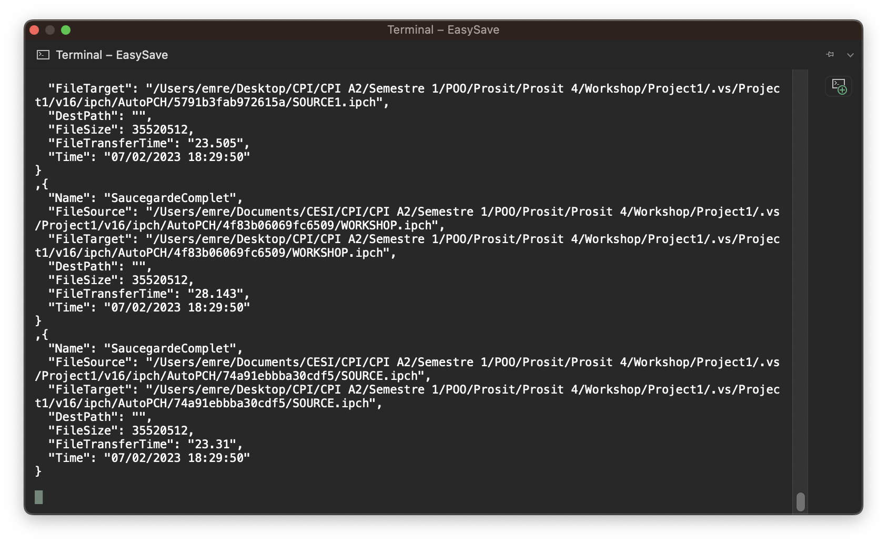

This system programming project simply involved the creation of a software program that would launch automatic backups of files from one directory to another.
To do this, the user first had to create the backup by entering the files to be backed up and the destination folder.
The project was structured as follows: First of all, we created a command-line version of the program, based on the basic idea. Create backups and run them one after the other, with a limited number of backups. And, to be able to visualize the backups performed through log files in a unique format (JSON format).
Then, after validation of the first version, we were able to create a second version, this time a GUI application that also allowed us to create and run backups one after the other,
but with one improvement: the ability to choose the log file format we wanted in the parameters (between XML and JSON).
Finally, after validation of the second version, we were able to deliver the final version of our .
This version is based on the second version we had created, with the addition of a system for encrypting certain types of file, and priority backup for certain file extensions.
And finally, the fact that backups were no longer to be performed one after the other, but in parallel.